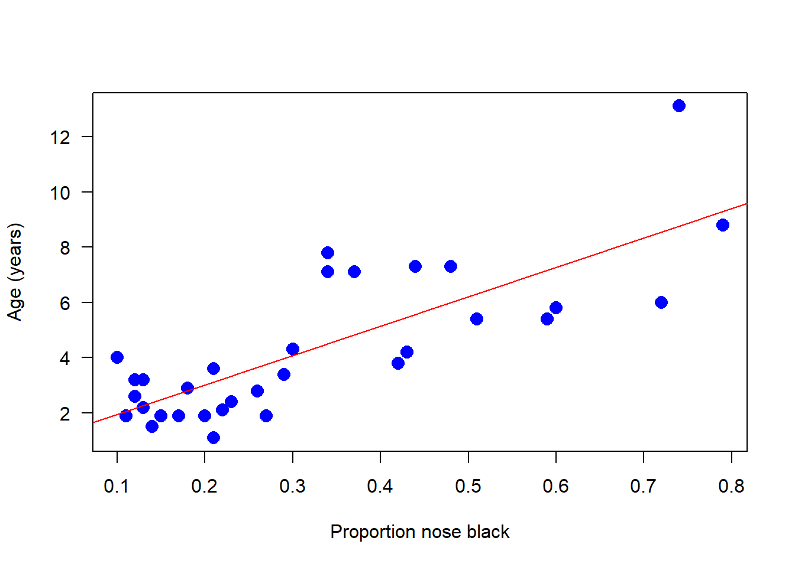
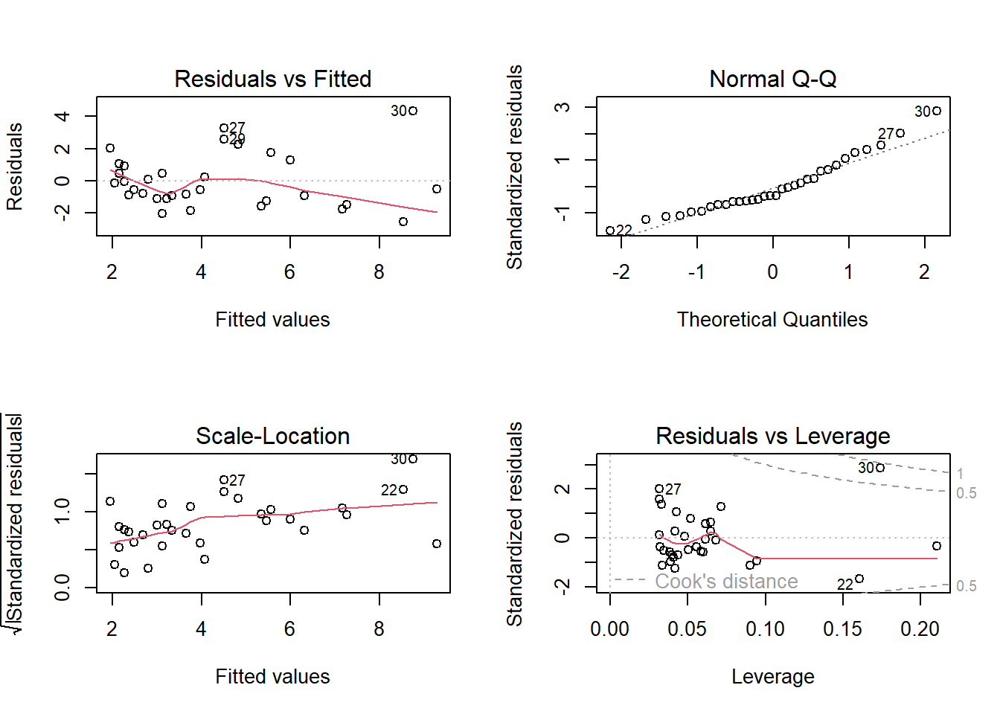

create a good header section and table of contents
save the script file with an informative name
set your working directory
Aim to make the script useful as a future reference for doing things in R - this will come in handy for projects and assessments!
3 Linear regression
In this lab we will use R to fit linear models to data to review basic principles of linear model fitting and implementation. Linear models for fixed effects are implemented in the R command lm(). This method is not suitable for models that contain random effects.
4 Prediction with linear regression
We’ll start with linear regression because this is the most familiar type of linear model. The data are from Whitman et al (2004 Nature 428: 175-178), who noticed that the amount of black pigmentation on the noses of male lions increases as they get older. They used data on the proportion of black on the noses of 32 male lions of known age (years) in Tanzania. We will use fit a linear model to these data to predict a lion’s age from the proportion of black in his nose. The data are in the file lions.csv.
4.1 Read and examine the data
Read the data from the file.
View the first few lines of data to make sure it was read correctly.
Create a scatter plot of the data. Choose the response and explanatory variables with care: we want to predict age from the proportion black in the nose.
4.2 Fit a linear model
Fit a linear model to the lion data. Store the output in an lm() object. Choose the response and explanatory variables with care: we want to predict age from the proportion black in the nose.
Add the best-fit line to the scatter plot. Does the relationship appear linear? From the scatter plot, visually check for any serious problems such as outliers or changes in the variance of residuals.*
Using the same fitted model object, obtain the estimates for the coefficients, slope and intercept, and standard errors. What is the R2 value for the model fit?**
Obtain 95% confidence intervals for the slope and intercept.
Test the fit of the model to the data with an ANOVA table.
Apply the plot() command to the lm() object created in (1) to diagnose violations of assumptions (keep hitting in the command window to see all the plots). Recall the assumptions of linear models. Do the data conform to the assumptions? Are there any potential concerns? What options would be available to you to overcome any potential problems with meeting the assumptions?*** Most of the plots will be self-explanatory, except perhaps the last one. “Leverage” calculates the influence that each data point has on the estimated parameters. For example if the slope changes a great deal when a point is removed, that point is said to have high leverage. “Cook’s distance” measures the effect of each data point on the predicted values for all the other data points. A value greater than 1 is said to be worrisome. Points with high leverage don’t necessarily have high Cook’s distance, and vice versa.
One of the data points (the oldest lion) has rather high leverage. To see the effect this has on the results, refit the data leaving this point out. Did this change the regression line substantially?
The variance of the residuals for black in the nose tends to rise with increasing age but the trend is not severe. The residuals might not be quite normal, but they are not badly skewed so we are probably OK.
** 0.61
*** It is even easier to see with these plots how the variance of the residuals tends to increase at higher fitted values. A transformation of one or both of the variables is usually the first course of action. R also has a toolkit for robust regression, which as the name suggests is more robust to violations of standard assumptions.
4.3 Prediction
Display the data once again in a scatter plot. Add the regression line.
Add confidence bands to the scatter plot. These are confidence limits for the prediction of mean of lion age at each value of the explanatory variable. You can think of these as putting bounds on the most plausible values for the “true” or population regression line. Note the spread between the upper and lower limits and how this changes across the range of values for age.
Add prediction intervals to the scatter plot. These are confidence limits for the prediction of new individual lion ages at each value of the explanatory variable. Whereas confidence bands address questions like “what is the mean age of lions whose proportion black in the nose is 0.5 ?”, prediction intervals address questions like “what is the age of that new lion over there, which has a proportion black in the nose of 0.5 ?”.
Examine the confidence bands and prediction intervals. Is the prediction of mean lion age from black in the nose relatively precise? Is prediction of individual lion age relatively precise? Could this relationship be used in the field to age lions?
4.4 Suggested solutions
All lines below beginning with double hashes are R output
# You might need to install these librarieslibrary(visreg, warn.conflicts=FALSE)library(ggplot2, warn.conflicts=FALSE)# Read and examine the datax <-read.csv("data/lions.csv", stringsAsFactors =FALSE)head(x)
age black
1 1.1 0.21
2 1.5 0.14
3 1.9 0.11
4 2.2 0.13
5 2.6 0.12
6 3.2 0.13
# Scatter plotplot(age ~ black, data = x, pch =16, las =1, col ="blue", cex =1.5, # Mere vanityxlab ="Proportion nose black", ylab ="Age (years)")

Fit a linear model
# 1. fit modelz <-lm(age ~ black, data=x)# 2. Add the best-fit line to the scatter plotplot(age ~ black, data = x, pch =16, las =1, col ="blue", cex =1.5, # Mere vanityxlab ="Proportion nose black", ylab ="Age (years)")abline(z, col ='red')
# or use ggplot methodggplot(x, aes(y = age, x = black)) +geom_point(size =3, col ="blue") +geom_smooth(method = lm, col ="red", size =0.5, se =FALSE) +labs(x ="Proportion nose black", y ="Age (years)") +theme_classic()

## `geom_smooth()` using formula 'y ~ x'
# 3. Estimate coefficients# "(Intercept)" refers to intercept, "black" to slopesummary(z)
Call:
lm(formula = age ~ black, data = x)
Residuals:
Min 1Q Median 3Q Max
-2.5449 -1.1117 -0.5285 0.9635 4.3421
Coefficients:
Estimate Std. Error t value Pr(>|t|)
(Intercept) 0.8790 0.5688 1.545 0.133
black 10.6471 1.5095 7.053 7.68e-08 ***
---
Signif. codes: 0 '***' 0.001 '**' 0.01 '*' 0.05 '.' 0.1 ' ' 1
Residual standard error: 1.669 on 30 degrees of freedom
Multiple R-squared: 0.6238, Adjusted R-squared: 0.6113
F-statistic: 49.75 on 1 and 30 DF, p-value: 7.677e-08
visreg(z, points.par =list(pch =16, cex =1.2, col ="blue"))
# 5. ANOVA tableanova(z)
Analysis of Variance Table
Response: age
Df Sum Sq Mean Sq F value Pr(>F)
black 1 138.544 138.544 49.751 7.677e-08 ***
Residuals 30 83.543 2.785
---
Signif. codes: 0 '***' 0.001 '**' 0.01 '*' 0.05 '.' 0.1 ' ' 1
Call:
lm(formula = age ~ black, data = x[x$age < 12, ])
Residuals:
Min 1Q Median 3Q Max
-2.0522 -0.9810 -0.4072 0.6353 3.4973
Coefficients:
Estimate Std. Error t value Pr(>|t|)
(Intercept) 1.2938 0.5089 2.542 0.0166 *
black 8.8498 1.4175 6.243 8.19e-07 ***
---
Signif. codes: 0 '***' 0.001 '**' 0.01 '*' 0.05 '.' 0.1 ' ' 1
Residual standard error: 1.447 on 29 degrees of freedom
Multiple R-squared: 0.5734, Adjusted R-squared: 0.5587
F-statistic: 38.98 on 1 and 29 DF, p-value: 8.191e-07
Prediction
z <-lm(age ~ black, data=x)x2 <-predict(z, interval ="prediction")
x2 <-cbind.data.frame(x, x2, stringsAsFactors =FALSE)ggplot(x2, aes(y = age, x = black)) +geom_point(size =3, col ="blue") +geom_smooth(method ="lm", se =TRUE) +geom_line(aes(y = lwr), color ="black", linetype ="dashed") +geom_line(aes(y = upr), color ="black", linetype ="dashed") +labs(x ="Proportion nose black", y ="Age (years)") +theme_classic()
5 Light and circadian rhythms
Our second example fits a linear model with a categorical explanatory variable. The data are from an experiment by Wright and Czeisler (2002. Science 297: 571) that re-examined a previous claim that light behind the knees could reset the circadian rhythm of an individual the same way as light to the eyes. One of three light treatments was randomly assigned to 22 subjects (a three-hour episode of bright lights to the eyes, to the knees, or to neither). Effects were measured two days later as the magnitude of phase shift in each subject’s daily cycle of melatonin production, measured in hours. A negative measurement indicates a delay in melatonin production, which is the predicted effect of light treatment. The data are in the file “knees.csv”.
5.1Read and examine the data
Read the data from the file.
View the first few lines of data to make sure it was read correctly.
Plot the phase shift data, showing the individual data points in each treatment group.
Determine whether the categorical variable “treatment” is a factor. If not a factor, convert treatment to a factor using the factor() command. This will be convenient when we fit the linear model.
Use the levels() command on the factor variable “treatment” to see how R has ordered the different treatment groups. The order will be alphabetical, by default. Conveniently, you will find that the control group is listed first in the alphabetical sequence. (As you are about to analyze these data with a linear model in R, can you think of why having the control group first in the order is convenient?)
To get practice, change the order of the levels so that the “knee” treatment group is second in the order, after “control”, and the “eyes” group is listed third.
Plot the phase shift data again to see the result.
5.2 Fit a linear model
Fit a linear model to the light treatment data. Store the output in an lm() object.
Create a graphic that illustrates the fit of the model to the data. In other words, include the predicted (fitted) values to your plot.
Use plot() to check whether the assumptions of linear models are met in this case. Examine the plots. Are there any potential concerns? There are several options available to you if the assumptions are not met (transformations, robust regression methods, etc.) but we don’t seem to need them in this case.
Remember from lecture that R represents the different levels of the categorical variable using dummy variables. To peek at this behind-the-scenes representation, use the model.matrix() command on the model object from your linear model fit in step (1). The output should have a column of 1’s for the intercept and two additional columns representing two of the three levels of the explanatory variable. Why is one level left out? Which level is the one not represented by a dummy variable?*
Using the lm() model object, obtain the parameter estimates (coefficients) along with standard errors. Examine the parameter estimates. If you’ve done the analysis correctly, you should see the three coefficients. Rounded, they are -0.309, -0.027, and -1.24. What do each of these coefficients represent – what is being estimated by each value?** Note that the output will also include an R2 value. This is loosely interpretable as the “percent of the variance in phase shift that is explained by treatment.”
The P-values associated with the three coefficients are generally invalid. Why? Under what circumstance might one of the P-values be valid?***
Obtain 95% confidence intervals for the three parameters.
Test the effect of light treatment on phase shift with an ANOVA table.
Produce a table of the treatment means using the fitted model object, along with standard errors and confidence intervals. Why are these values not the same as those you would get if you calculated means and SE’s separately on the data from each treatment group?
One of the columns must be dropped because the information in the 4 columns is redundant in a particular way (a combination of three of the columns exactly equals the fourth). By default, R drops the column corresponding to the first level of the categorical variables.
** The mean of the first group and the differences between the second and third groups from the first.
*** The tests shown are t-tests of differences between means. However, a posteriori pairwise comparisons (unplanned comparisons) between groups requires a Tukey test or other test that accounts for the number of pairs of means. The only time a t-test is valid is for a planned comparison.
Analysis of Variance Table
Response: shift
Df Sum Sq Mean Sq F value Pr(>F)
treatment 2 7.2245 3.6122 7.2894 0.004472 **
Residuals 19 9.4153 0.4955
---
Signif. codes: 0 '***' 0.001 '**' 0.01 '*' 0.05 '.' 0.1 ' ' 1
# 9.# The ANOVA method assumes that the variance of the residuals is the same# in every group. The SE's and confidence intervals for means make use of# the mean squared error from the model fit, not just the values in the group.emmeans(z, "treatment")
We analyzed the data in fruitflies.csv previously in the graphics lab. Here we will analyze them further by fitting a linear model to the data.
The data are from L. Partridge and M. Farquhar (1981), Sexual activity and the lifespan of male fruit flies, Nature 294: 580-581. The experiment placed male fruit flies with varying numbers of previously-mated or virgin females to investigate whether mating activity affects male lifespan.
The linear model will have longevity as the response variable, and two explanatory variables: treatment (categorical) and thorax length (numerical; representing body size). The goal will be to compare differences in fly longevity among treatment groups, correcting for differences in thorax length. Correcting for thorax length will possibly improve the estimates of treatment effect. The method is also known as analysis of covariance, or ANCOVA.
Read and examine data
Read the data from the file.
View the first few lines of data to make sure it was read correctly.
Determine whether the categorical variable “treatment” is a factor. If not a factor, convert treatment to a factor. This will be convenient when we fit the linear model.
Use the levels() command on the factor variable “treatment” to see how R has ordered the different treatment groups (should be alphabetically).
Change the order of the categories so that a sensible control group is first in the order of categories. Arrange the order of the remaining categories as you see fit.
This repeats an exercise from the graphics workshop. Create a scatter plot, with longevity as the response variable and body size (thorax length) as the explanatory variable. Use a single plot with different symbols (and colors too, if you like) for different treatment groups. Or make a multipanel plot using the lattice or ggplot2 package
Fit a linear model
Fit a linear model to the fly data, including both body size (thorax length) and treatment as explanatory variables. Place thorax length before treatment in the model formula. Leave out the interaction term for now – we’ll assume for now that there is no interaction between the explanatory variables thorax and treatment.
Use plot() to check whether the assumptions of linear models are met in this case. Are there any potential concerns? If you have done the analysis correctly, you will see that the variance of the residuals is not constant, but increases with increasing fitted values. This violates the linear model assumption of equal variance of residuals.
Attempt to fix the problem identified in step (3) using a log-transformation of the response variable. Refit the model and reapply the graphical diagnostic tools to check assumptions. Any improvements? (To my eye the situation is improved but the issue has not gone away entirely.) Let’s continue anyway with the log-transformed analysis.
Visualize the fit of the model to the data using the visreg package. Try two different possibilities. In the first, plot the fit of the response variable to thorax length separately for each treatment group. In the second, plot the fit of the data to treatment, conditioning on the value of the covariate (thorax length).
Obtain the parameter estimates and standard errors for the fitted model. Interpret the parameter estimates. What do they represent*? Which treatment group differs most from the control group?
Obtain 95% confidence intervals for the treatment and slope parameters.
Test overall treatment effects with an ANOVA table. Interpret each significance test – what exactly is being tested?
Refit the model to the data but this time reverse the order in which you entered the two explanatory variables in the model. Test the treatment effects with an ANOVA table. Why isn’t the table identical to the one from your analysis in (7)**?
Our analysis so far has assumed that the regression slopes for different treatment groups are the same. Is this a valid assumption? We have the opportunity to investigate just how different the estimated slopes really are. To do this, fit a new linear model to the data, but this time include an interaction term between the explanatory variables.
The parameters will be more complicated to interpret in the model including an interaction term, so lets skip this step. Instead, go right to the ANOVA table to test the interaction term using the new model fit. Interpret the result. Does it mean that the interaction term really is zero?
Another way to help assess whether the assumption of no interaction is a sensible one for these data is to determine whether the fit of the model is “better” when an interaction term is present or not, and by how much. We will learn new methods later in the course to determine this, but in the meantime a simple measure of model fit can be obtained using the adjusted \(R^2\) value. The ordinary \(R^2\) measures the fraction of the total variation in the response variable that is “explained” by the explanatory variables.
This, however, cannot be compared between models that differ in the number of parameters because fitting more parameters always results in a larger \(R^2\), even if the added variables are just made-up random numbers. To compare the fit of models having different parameters, use the adjusted \(R^2\) value instead, which takes account of the number of parameters being fitted. Use the summary() command on each of two fitted models, one with and the other without an interaction term, and compare their adjusted \(R^2\) values. Are they much different? If not, then maybe it is OK to assume that any interaction term is likely small and can be left out.
*In a linear model with a factor and a continuous covariate, and no interaction term, the coefficient for the covariate is the common regression slope. The “intercept” coefficient represents the y-intercept of the first category (first level in the order of levels) of the treatment variable. Remaining coefficients represent the difference in intercept between that of each treatment category and the first category.
**R fits model terms sequentially when testing. Change the order of the terms in the formula for the linear model and the results might change.